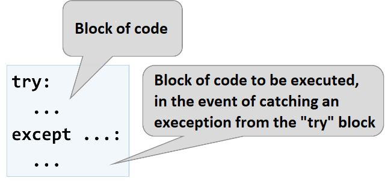

Chapter 7.1. Complex Loops
Since we have learned what for loops are and their function in code, now is the time to take a look at other loop types, as well as some more complex loop constructs. These will expand our knowledge and help us solve more challenging problems. In particular, we will discuss how to use the following programming constructs:
- loops with step
whileloopswhile+breakloops- infinite loops
In the current chapter, we will also take a look at the break operator and how to use it to interrupt a loop. We will also learn how to process errors during execution of the program, using try-except statement.
Loops with step
In the "Loops (Repetitions)" chapter we learned how the for loop works and we already know when and for what purpose it is used. In the present chapter we will take a look at a particular and a very important part of this structure - its step or as it is also known step.
Loop with a Step – Explanation
The step is part of the 'range' function, that specifies the amount used to increment or decrement the value of the main variable. The step is declared as the last argument in the range function.
By default, range in Python uses a step value of 1 and is not added to the range function. If we want our step to be different from 1, when writing the range function, we add another number as the last parameter, which is our step. With a step of 10, the loop would appear as below:

Here is a series of sample problems, the solution of which will help us better understand the use of a step in a for loop.
Problem: Numbers from 1 to N with a step of 3
Write a program that prints the numbers from 1 to n with a step of 3. For example, if n = 100, then the output would be: 1, 4, 7, 10, …, 94, 97, 100.
We can solve the problem using the following sequence of actions (algorithm):
- We read
nfrom the console. - We run a
forloop from 1 ton(includingn) with a step of 3. - In the body of the loop we print the value of the current step.

Testing in The Judge System
You can test your solution at the following link: https://judge.softuni.org/Contests/Practice/Index/1057#0.
Problem: Numbers from N to 1 in reverse
Write a program that prints the numbers from n to 1 in reverse (step -1). For example, if n = 100, then the output will be: 100, 99, 98, …, 3, 2, 1.
We can solve the problem in the following manner:
- We read
nfrom the console. - We create a
forloop, fromnto 0. - We define the step size: -1.
- In the body of the loop we print the value of the current step.

Testing in The Judge System
You can test your solution at the following link: https://judge.softuni.org/Contests/Practice/Index/1057#1.
Problem: Numbers from 1 to 2^n with a for loop
In the following example, we will use the standard size 1 step.
Write a program that prints the numbers from 1 to 2^n (two to the power of n). For example, if n = 10, then the output would be 1, 2, 4, 8, 16, 32, 64, 128, 256, 512, 1024.

Testing in The Judge System
You can test your solution at the following link: https://judge.softuni.org/Contests/Practice/Index/1057#2.
Problem: Even Powers of 2
Print the even powers of 2 until 2^n: 2^0, 2^2, 2^4, 2^8, …, 2^n. For example, if n = 10, then the output would be 1, 4, 16, 64, 256, 1024.
Here is how we can solve the problem:
- We declare a variable
numthat will hold the current number and we assign it the initial value of 1. - For the step of the loop we set a value of 2.
- In the body of the loop: we print the value of the current number and increase the current number
num4 times (as per the problem description).

Testing in The Judge System
You can test your solution at the following link: https://judge.softuni.org/Contests/Practice/Index/1057#3.
While loop
The next type of loops that we will become familiar with, which are called while loops. The special thing about them is that they repeat a command block, while a condition is met. Their structure is a bit different than that of the for loops, however, they boast a simpler syntax.
While Loop – Explanation
In programming, the while loop is used when we want to repeat the execution of a specific logic block until a specific condition is met. Any expression that returns either true or false (a Boolean) can be used as a "condition". When the condition becomes invalid, the while loop is interrupted and the program proceeds to execute the code after the loop. The while loop structure looks like this:

Here is a series of sample problems, the solutions of which will help us better understand the use of the while loop.
Problem: Sequence of Numbers 2k+1
Write a program that prints all numbers ≤ n in the series: 1, 3, 7, 15, 31, …, assuming that each number is generated according to the following formula next_number = previous_number * 2 + 1.
Here is how we can solve the problem:
- We declare a variable
numthat will hold the current number and we assign it the initial value of 1. - For loop condition, we use the current number <= n.
- In the body of the loop: we print the value of the current number and increase the current number by using the formula above.
Here is a sample implementation of this idea:

Testing in The Judge System
You can test your solution here: https://judge.softuni.org/Contests/Practice/Index/1057#4.
Problem: Number in Range [1 … 100]
Enter an integer in the range [1 … 100]. If the entered number is invalid, enter again. In this case, an invalid number would be any number that is outside the given range.
To solve the problem, we can use the following algorithm:
- We declare a variable
num, to which we assign the integer, received from the console. - For a loop condition, we put a
Trueexpression, if the number is not in the range specified in the problem description. - In the body of the loop: we print the message "Invalid number!" on the console, afterwards we assign a new value to
num(the next line from the console input). - Once we have validated the entered number, we print its value outside the body of the loop.
Here is a sample implementation of the algorithm using a while loop:

Testing in The Judge System
You can test your solution here: https://judge.softuni.org/Contests/Practice/Index/1057#5.
Greatest Common Divisor (GCD)
Before proceeding to the next problem, we should become familiar with the definition of the greatest common divisor (GCD).
Definition of GCD: the greatest common divisor of two natural numbers a and b is the largest number that divides both a and b without reminder. For example:
| a | b | GCD |
|---|---|---|
| 24 | 16 | 8 |
| 67 | 18 | 1 |
| 12 | 24 | 12 |
| 15 | 9 | 3 |
| 10 | 10 | 10 |
| 100 | 88 | 4 |
The Euclidean Algorithm
In the next problem we will use one of the first published algorithms for finding the GCD - Euclid's algorithm:
Until we have a remainder of 0:
- We divide the greater number by the smaller one.
- We take the remainder of the division.
Euclid's algorithm pseudo-code:
while b ≠ 0
oldB = b
b = a % b
a = oldB
print a
Problem: Greatest Common Divisor (GCD)
Enter the integers a and b and find GCD(a, b).
We will solve the problem by implementing Euclid's algorithm:
- We declare variables
aandb, to which we assign the integer values, passed by the console input. - For loop condition, we use a
Trueexpression, if the numberbis different than 0. - In the body of the loop we follow the instructions from the pseudo-code:
- We create a temporary variable to which we assign the current value of
b. - We assign a new value to
b, which is the remainder of the division ofaandb. - On variable
awe assign the previous value of the variableb.
- We create a temporary variable to which we assign the current value of
- Once the loop is complete and we have found the GCD, we print it on the screen.

Testing in The Judge System
You can test your solution here: https://judge.softuni.org/Contests/Practice/Index/1057#6.
While True + break loop
The next type of loop construction that we will become familiar with while studying programming is the while True + break loop (for short while + break loop). Its idea is to repeat a block of code over and over again until explicit termination of the loop, usually after a if statement in the body of the loop. Here's what this loop looks like in Python code:

The above example is called “inverted while loop”, because the condition for exiting the loop is at the end, not at the beginning. In essence, the above construction is an “infinite loop” with a check, of a given condition, for an exit inside the body of the cycle.
In programming, the break operator unconditionally terminates a loop and proceeds to the first instruction after it. In the example above, a condition is checked at the end of the cycle, and if it is not true, the cycle is terminated.
The construct for the while + break loop in many other programming languages is implemented with the do-while construct, but there is no direct equivalent of do-while in Python. In order to do the same in Python, we can use an infinite loop (while True) and when an exit condition is reached, the loop is interrupted (with break).
The while + break construct provides more flexibility than while loops, because it allows to break the loop at any place in the body of the loop(for example at the beginning, in the middle or at the end), it even allows to have exit of the loop in several different places (with several break operators).
The structure of while + break loop is very similar to the classic while loop, but there is a significant difference: while is executed 0 or more times (according to the entry condition of the loop), whilst while + break will execute its body at least once. Why is this? In the while True + break loop structure, the condition is always checked in the body of the loop, whilst with the classic while loop the condition, which we check to exit the loop is always at the begginning, before its body.
Once we are familiar with the concept of a while + break loop with an exit condition, which is not required to be at the beginning, now we should proceed with the usual set of practical problems, with which we can master the new knowledge.
Problem: Calculating Factorial
For n number calculate n! = 1 * 2 * 3 * … * n. For example, if n = 5, then the result would be: 5! = 1 * 2 * 3 * 4 * 5 = 120.
Here is how we can calculate factorial in more detail:
- We declare the variable
n, to which we assign the integer value, received from the input of the console. - We declare another variable -
fact, with an initial value of 1. We will use it in the calculation and store the factorial value. - For the loop condition we will use
n > 1, because each time we perform the calculations in the body of the loop, we will decrease the value ofnby 1. - In the body of the loop:
- We assign a new value to
fact, which value is the product of multiplying the currentfactwith the currentn. - We decrement
nwith 1.
- We assign a new value to
- Outside the body of the loop we print the final factorial value.

Testing in The Judge System
Test your solution here: https://judge.softuni.org/Contests/Practice/Index/1057#7.
Problem: Summing the Digits of a Number
Sum up the digits of the integer positive number n. For example, if n = 5634, then the output would be: 5 + 6 + 3 + 4 = 18.
We can use the following idea to solve the problem:
- We declare the variable
n, to which we assign a value equal to the number received by the user. - We create a second variable -
sum, with an initial value of 0. We will use it for the calculation and storage of the result. - As a loop condition, we will use
n > 0, since, after each iteration of the loop, we will be removing the last digit fromn. - In the body of the loop:
- We assign a new value to
sum, which is the result of the sum of the current value ofsumwith the last digit ofn. - We assign a new value to
n, which is the result of removing the last digit ofn.
- We assign a new value to
- outside the body of the loop, we print the final value of the sum.

n % 10: returns the last digit of the number n.n // 10: deletes the last digit of n. |
Testing in The Judge System
Test your solution here: https://judge.softuni.org/Contests/Practice/Index/1057#8.
Infinite loops and the operator break
So far, we were introduced to various types of loops, learning what structures they have and how they are applied. Now, we need to understand what an infinite loop is, when it occurs, and how we can break it using the break operator.
Infinite Loop – Explanation
An infinite loop runs infinitely the code of its body. With the infinite while loops the end check is a conditional expression that always returns true. Here is an example of an infinite while loop:

The Break Operator
We already know that the infinite loop executes a certain code infinitely, but what if we want at some point under a given condition to interrupt and exit the loop? The break operator comes in handy in this situation.
The operator break stops a loop's execution at the point it is called and the execution continues from the first line after the end of the loop. This means that the current iteration of the loop will not be completed accordingly and the rest of the code in the body of the loop will not be executed. |
Problem: Prime Number Checking
The next problem we are going to solve is to check whether a given number is prime, but before that, we should remember what prime numbers.
Definition: An integer is considered prime, if it is divisible only by itself and by 1. By definition, the prime numbers are positive and greater than 1. The smallest prime number is 2.
We can assume that an integer n is a prime number if n > 1 and n is not divisible by a number between 2 and n-1.
The first few prime numbers are: 2, 3, 5, 7, 11, 13, 17, 19, 23, 29, 31, 37, 41, 43, …
By contrast, composite numbers are integers, which can be obtained by multiplying several prime numbers.
Here are some examples of composite numbers:
- 10 = 2 * 5
- 42 = 2 * 3 * 7
- 143 = 13 * 11
An algorithm to check whether a given number is prime: we check if n > 1 and if n is divisible by 2, 3, …, n-1 without remainder.
- If it is divisible by any of the numbers, it is composite.
- If it is not divisible by any of the numbers, then it is prime.
We can optimize the algorithm by instead of checking until n-1, to check the divisors only until √n. Think of the reasons why this is so. |
Problem: check for a prime number. Break operator
You are tasked to write a function that takes a single input n integer and checks if it is prime. This can be implemented by checking if n is divisible by any numbers in the range between 2 and √n.
The steps of the "prime checking algorithm" are given below in bigger detail:
- We declare the variable
n, to which we assign the integer passed by the console. - We create a
is_primeboolean with and an initial value ofTrue. We assume that a number is prime until proven otherwise. - We create a
forloop, with the initial value set to 2, for a condition the current value<= √n. The step is set to 1. - In the body of the loop we check if
n, divided by the current value has a remainder. If there is no reminder from the division, then we changeis_primetoFalseand exit the loop through thebreakoperator. - Depending on the value of
is_primewe print whether the input number is prime (True) or composite (False).
Here is a sample implementation of the prime checking algorithm, described above:

What remains is to add a condition that checks if the input number is greater than 1, because, by definition numbers such as 0, 1, -1 and -2 are not prime.
Testing in The Judge System
Test your solution here: https://judge.softuni.org/Contests/Practice/Index/1057#9.
Problem: the break operator in an infinite loop
Write a function, which checks whether a given number n is even and if so - print it on the console. An even number can be divided by 2 without a remainder. If the number is invalid, we will print that the current number is not even and the user will need to input a new number.
Here is an idea for the solution:
- We declare a variable
n, with an initial value of 0. - We create an infinite
whileloop, with a condition set toTrue. - In the body of the loop:
- We take the integer value, passed to our function, and assign it to
n. - If the number is even, we exit the loop by a
break. - Otherwise, we print a message stating that the number is not even. Iterations continue, until an even number is entered.
- We take the integer value, passed to our function, and assign it to
- We print the even number on the console.
Here is an example implementation of the idea:

Note: although the code above is correct, it will not work if the user enters text instead of a number, for example "Invalid number". Then the parse of the text to a number will break and the program will display error message (exception). We will learn very soon how to deal with this problem and how to catch and handle exceptions using the try-except construct.
Testing in The Judge System
Test your solution here: https://judge.softuni.org/Contests/Practice/Index/1057#10.
Nested Loops and the Break operator
Now since we know what nested loops are and how the break operator works, it is time to figure out how they work together.To get a better idea, we should write a function step by step, that should make all possible combinations of number pairs. The first number in the pair is increasing from 1 to 3, while the second one is decreasing from 3 to 1. Our solution must continue running until i + j is not equal to 2 (i.e. i = 1 and j = 1).
The desired result is:

Here is a wrong implementation, that looks right at first glance:

If we leave our function that way, our result will be as follows:

Why is this so? As we can see, the result is missing "1 1". When the function reaches the point when i = 1 and j = 1, it enters the if check and executes the break operation. This way, it exits the inner loop, but then continues the execution of the outer loop. i increases, the function enters the inner loop and prints the result.
When we use the break operator in a nested loop, it interrupts only the execution of the inner loop. |
What is the correct solution? One way to solve the problem is by declaring a bool variable, to keep track if the loop iteration has to continue. If we have to exit (leave all nested loops), we set the variable to True and exit the inner loop with break, and in the next check, we exit the outer loop. Here is an example implementation of this idea:

In this manner, when i + j = 2, the program will set the variable has_to_end = True and will exit the inner loop. Upon the next iteration of the outer loop, via the if check, the function will not reach the inner loop and will interrupt its execution.
Testing in The Judge System
Test your solution here: https://judge.softuni.org/Contests/Practice/Index/1057#11.
Dealing with exceptions: try-except
The last thing we'll look at in this chapter is how to "catch" errors (exceptions) using the try-except construction .
What is try-except?
The try-except construction is used for catching and handling exceptions (errors) during program execution.
In programming, exceptions are notifications of an event that disrupts the normal operation of a program. Such events interrupt the execution of the program, which starts looking for someone to handle the situation. If it is not found, the exception is printed on the console (i.e. the program stops). If found, the exception is processed and the program continues normal execution. In a bit we will see exactly how this happens.
try-except construction
The try-except construction has different options, but for now we will get acquainted only with the most basic of them

In the next task we will see how to deal with a situation, in which the user enters an input other than a number (for example string instead of int), using try-except.
Problem: dealing with invalid numbers by try-except
Write a program that checks that a number n is even and, if so, print it on the screen. In case of invalid entered number, a message should be displayed that the entered input is not a valid number and the input should continue.
Here's how we can solve the problem:
- We create an infinite
whileloop, as a condition we will setTrue. - In the body of the loop:
- We create a
try-exceptconstruction. - In the block
trywe write the program logic for reading the user input, its parsing to a number and the parity check. - At even number we print it and leave the loop (with
break). The program has done its job and is coming to an end. - At odd number we print a message that an even number is required without leaving the loop (because we want it to be repeated again).
- If we catch an exception during the execution of the
tryblock, we print a message for an invalid entered number (and the loop repeats, because we do not explicitly leave it).
- We create a
Here is an example implementation of the described idea:

Testing in The Judge System
Test your solution here: https://judge.softuni.org/Contests/Practice/Index/1057#10.
Now the solution must always work: whether we enter integers, invalid numbers (for example, numbers with too many digits) or text that does not contain numbers.
Problems with loops
In this chapter, we got familiar with a few new types of loops that can perform repetitions with more complex programming logic. Let's solve a few practical problems using these new constructs.
Problem: Fibonacci Numbers
Fibonacci's numbers in mathematics form a sequence that looks like this: 1, 1, 2, 3, 5, 8, 13, 21, 34, ….
The formula to derive the next member of Fibonacci's sequence is:
F0 = 1
F1 = 1
Fn = Fn-1 + Fn-2
Sample Input and Output
| Input (n) | Output | Comment |
|---|---|---|
| 10 | 89 | F(11) = F(9) + F(8) |
| 5 | 8 | F(5) = F(4) + F(3) |
| 20 | 10946 | F(20) = F(19) + F(18) |
| 0 | 1 | |
| 1 | 1 |
Enter an integer number n and calculate the n-th Fibonacci number..
Hints and Guidelines
An idea to solve the problem:
- We declare a variable
n, which will hold the integer value received from the console input. - We create the variables
f0andf1, to which we assign the value to 1, since this is the start of Fibonacci's sequence. - We create a
forloop starting from 0 to final valuen - 1. - In the body of the loop:
- We create a temporary variable
f_next, to which we assign the next number in the Fibonacci sequence. - To
f0we assign the current value off1. - To
f1we assign the value of the temporary variablef_next.
- We create a temporary variable
- Out of the loop we print the n-th number of Fibonacci.
Example implementation:

Testing in The Judge System
Test your solution here: https://judge.softuni.org/Contests/Practice/Index/1057#12.
Problem: Numbers Pyramid
Print the numbers 1 … n in a pyramid as per the below example. On the first row, we print one number, at the second we print two, at the third, we print three, and so on, until the numbers are over. On the last line, we print as many numbers as we get until we get to n.
Sample Input and Output
| Input | Output | Input | Output | Input | Output |
|---|---|---|---|---|---|
| 7 | 1 2 3 4 5 6 7 |
5 | 1 2 3 4 5 |
10 | 1 2 3 4 5 6 7 8 9 10 |
Hints and Guidelines
We can solve the problem with two nested loops (by rows and columns) with printing in them and leaving when the last number is reached. Here is the idea, written in more detail:
- We declare a variable
n, to which we assign the integer value, received from the console input. - We declare a variable
numwith an initial value of 1. It will hold the count of printed numbers. At each iteration, we will increment it by 1 and will add it to the current row. - We create an outer
forloop, which will be responsible for the rows in the table. The loop variable will be namedrowand we assign it an initial value of 1. For condition, we setn + 1. - In the body of the loop, we create an inner
forloop, which will be responsible for the columns in the table. We name the variablecoland assign it an initial value of 1. For condition we setrow + 1(row= number of digits per line). - In the body of the nested loop:
- We check whether
col > 1, if true we print space. If we do not make this check and instead print the space every time, each resulting line will start with a space. - We print the number
numin the current cell of the table and increment it by 1. - We check if
num > n. If thenumis greater thann, we break the inner loop.
- We check whether
- We print empty line, to move on to the next.
- Again, we check if
num > n. If it is greater, we interrupt the execution of our program with abreakoperator.
Here is an example implementation:

Testing in The Judge System
Test your solution here: https://judge.softuni.org/Contests/Practice/Index/1057#13.
Problem: Numbers Table
Print the numbers 1 … n in a table as per the examples below:
Sample Input and Output
| Input | Output | Input | Output |
|---|---|---|---|
| 3 | 1 2 3 2 3 2 3 2 1 |
4 | 1 2 3 4 2 3 4 3 3 4 3 2 4 3 2 1 |
Hints and Guidelines
We can solve the problem by using two nested loops and some simple calculations in them:
- We take the size of the table from the integer value of the variable
n, which is received from the console input. - We create a
forloop, that will be responsible for the rows of the table. We name the loop variablerowand assign it an initial value of 0. For condition, we setn. The size of the step is 1. - In the body of the loop we create a nested
forloop, that will be responsible for the columns in the table. We name the loop variablecoland assign it an initial value of 0. For condition, we setn. The size of the step is set to 1. - In the body of the nested loop:
- We create a variable
num, to which we assign the result of the current row + the current column + 1 (+1, is needed since we count from 0). - We check whether
num > n. Ifnumis greater thann, we assignnuma new value equal to two timesn- the current value ofnum. We do this in order not to exceedn** in any of the cells of the table.- We print the number fro the current table cell.
- We create a variable
- We print empty line in the outer loop, to move on to the next line.
Here is an example implementation:

Testing in The Judge System
Test your solution here: https://judge.softuni.org/Contests/Practice/Index/1057#14.
What Have We Learned from This Chapter?
We can use for loops with a step:
for i in range(1, n + 1, 3):
print(i)
The while loop is repeated while a condition is True:
num = 1
while num <= n:
print(num)
num += 1
If we have to interrupt the loop execution, we use the break operator:
n = 0
while True:
n = int(input())
if n % 2 == 0:
break # even number -> exit from the loop
print("The number is not even.")
print("Even number entered: {}".format(n))
We already know how to catch errors during the execution of our program:
try:
print("Enter even number: ", end="")
n = int(input())
except ValueError:
print("Invalid number.")
# If int(…) gets an error, it will complete the exception block of code
Problem: Web Applications with More Complex Loops
Now we know how to repeat a group of actions using loops. Let's do something interesting: web based game. Yes, a real game, with graphics and game logic. Let's have fun. It will be complicated, but if you do not understand exactly how it works, that is no problem. We are still just entering programming. There is time, you will advance with this technology. For now, follow the steps.
Problem: Web Game "Shoot The Fruits!"
Condition: Develop a Flask web application – a game in which the player shoots at fruits, arranged in a table. Successfully hit fruits disappear, and the player receives points for each fruit that was hit. The shooting is performed on columns, from top to bottom or vice-versa, and the location of the hit (the column under fire) is set by a scroll bar. Due to the inaccuracy of the scroller, the player is not quite sure which column to shoot at. So with each shot there is a chance not to hit and this makes the game more interesting (similar to the slingshot in Angry Birds).
Our game should look like this:


Shown below, are the steps for implementing the "Shoot the Fruits!" Web application.
Empty PyCharm Solution
We create a empty solution in PyCharm to organize the code from the application:

Then, we give a meaningful name to the project, for example "Fruits-Web-Game". Also, set the Python interpreter to the default one:

We will create our web application using the Flask library, which we have already met. As we already know, before we start writing code, we need to install it. We go to PyCharm settings [File] -> [Settings] and then to [Project: Fruit-Web-Game] -> [Project Interpreter]. There, press the + button, search for and install Flask.
Now we need to take the structure of the project from the resources provided to us.
Then, we add the resources for the game (they are part of the task files for this project and can be downloaded from here). We copy them from Windows Explorer and paste them in the project folder in PyCharm with copy/paste. Once we have placed the resources, the structure of the project should look like this:

If we open app.py and launch it with the right button -> [Run 'app'], we should open the application, then click on the link in the console and open our web browser :

Now we create the controls for the game. The goal is to add scroll bars, with which the player can aim, and a button to start a new game. Therefore, we need to edit the templates/index.html file. Delete "Hello World" and enter the following code in its place:

This code creates a web form <form> with a scroller (field) position to set a number in the interval [0 … 100] and a button [Fire Top] to send the form data to the server. The action that will process the data is called /FireTop, which means the fire_top() function, which is located in the app.py file. There are two more similar forms with buttons [Fire Bottom] and [New Game].
Now we need to prepare the fruits for drawing in the view. Add the following code to the app.py file:

The above code defines the fields for number of rows, number of columns, for fruit table (playing field), for the points accumulated by the player and information whether the game is active or finished (field gameOver). The playing field is 9 columns in 3 rows and contains text for each field: apple, banana, orange, kiwi, empty or dynamite. The main action index() prepares the playing field for drawing by saving the elements of the game and calling the view that draws them on the game page (in the web browser as HTML).
We need to generate random fruits. To do this, we need to write the method generate_random_fruits() with the code from the picture below. This code writes in the table (matrix) fruits names of different pictures and thus builds the playing field. One of the following values is written in each cell of the table: apple, banana, orange, kiwi, empty or dynamite.Then, in order to draw the corresponding image in the view, .png will be pasted to the text from the table and thus the name of the image file will be obtained, which will be inserted into the HTML page as part of the playing field. Filling the playing field (9 columns with 3 rows) is done in the view index.html, with two nested for loops (per row and per column).
To generate random fruits, a random number between 0 and 8 is generated for each cell (see class random in Python). If the number is 0 or 1, put apple, if it is between 2 and 3, put banana, etc. If the number is 8, set dynamite. Thus, fruits appear 2 times more often than dynamite. Here is the code:

Drawing the fruit in index.html:
In order to fill the playing field with the fruits, we have to iterate two nested loops (for the rows and for the columns). Each line consists of 9 pictures, each of which contains apple, banana or another fruit, or an empty field empty, or dynamite. Images are drawn by printing an HTML tag to insert an image: <img src="/images/apple.png" />. Nine pictures are arranged one after the other on each of the lines, and then they are moved to a new line with <br>. This is repeated three times for the three lines. Finally, the player's points are printed. Here's how the code for drawing the playing field and points looks like:

Note the curly braces – they are used to switch between the languages - HTML and Python and come from Jinja2 syntax for drawing dynamic web pages.
We start the project with [Shift+F10]. It is expected that a random fruit field with sizes 9 by 3 will be generated and visualized on the web page through a series of pictures:

Now the game is somewhat done: the playing field is randomly generated and visualized successfully (if you haven't made a mistake somewhere). It remains to realize the essence of the game: shooting at the fruits.
To do this, add the actions [New Game], [Fire Top] and [Fire Bottom] to the file app.py:

Using the code above we define three actions:
reset()– launches a new game by generating a new random playing field with fruits and explosives, resets the player's points and makes the game valid (gameOver = false). This action is quite simple and can be tested immediately with [Shift+F10] before writing the others..fire_top()– shoots in line 0 atposition(number from 0 to 100), taken by the user. A down (+1) shooting from row 0 (top) is called. The shooting itself is more complex in logic and will be discussed shortly.fire_bottom()– shoots in line 2 atposition(number from 0 to 100), taken by the user. A shoot in the up (-1) direction from row 2 (bottom) is called.
We implement the "shooting" method fire(position, start_row, step):

Shooting works as follows: first the number of the column col, to which the player is aiming is calculated. The input number from the scroller (between 0 and 100) s reduced to a number between 0 and 8 (for each of the 9 columns). The line number row is either 0 (if the shot at the top) or the number of lines minus one (if the shot is at the bottom). Accordingly, the direction of firing (the step) is 1 (down) or -1 (up).
To find where the shot hits a fruit or dynamite, go through a loop through all the cells of the playing field in the target column and from the first to the last attacked row. If a fruit is found, it disappears (replaced by empty) and points are given to the player. If dynamite is encountered, the game is marked as over.
We leave it to more avid readers to implement more complex behaviors, for example, to give different points when hitting a different fruit, to realize an animation with an explosion (this is not too easy), to take away points when shooting unnecessarily in an empty column, and similar.
We test what works so far by running the application with [Ctrl + Shift + F10]:
- New game ; the new game button must generate a new playing field with randomly placed fruits and explosives and reset the player's points.
- Shooting from above ; shooting from above must remove the top fruit in the hit column or cause the end of the game in dynamite. In fact, at the end of the game, nothing will happen yet, because in the view this case is not yet considered.
- Shooting from below ; shooting from below must remove the bottom fruit in the hit column or stop the game when hitting dynamite.
For now, nothing is happening at "End of Game".If the player hits dynamite, the application notes that the game is over (game_over = True), but this fact is not visualized in any way. In order for the game to end, we need to add a few checks to the view:

The code above checks if the game is over and shows respectively the shooting controls and the playing field (during active play) or a picture with exploded fruits at the end of the game.
After changing the code of the view, we start with [Ctrl + Shift + F10] and test the game again:

This time when hitting dynamite, the right picture should appear and only the "new game" action should be allowed (the [New Game] button).
Was it complicated? Did you manage to make the game? If you fail, don't worry, this is a relatively complex project that involves a large amount of unstudied material. If you encounter any difficulties, you can ask in the Softuni's Reddit Community: https://www.reddit.com/r/softuni/.